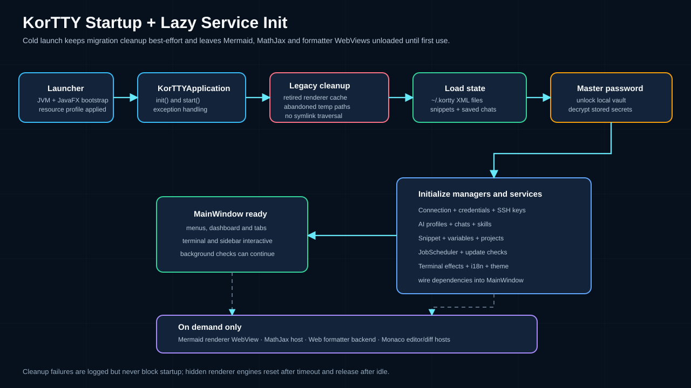
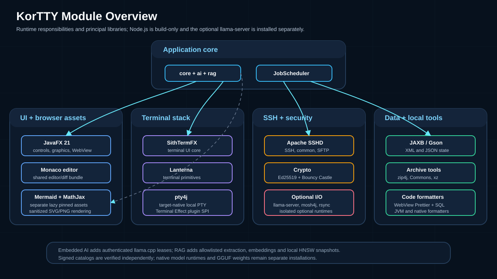

Architecture (Entwickler)¶
korTTY ist ein modularer JavaFX-SSH-Client, der auf einer mehrschichtigen Architektur basiert. Dieser Anleitung beschreibt die Kernmodule, ihre Verantwortlichkeiten, Abhängigkeiten und wie sie interagieren, um ein nahtloses Terminalerlebnis mit erweiterten Funktionen wie Jobplanung, KI-Integration und Terminaleffekt-Plugins zu bieten.

Architekturübersicht¶
Das folgende Diagramm zeigt die Hauptkomponenten von korTTY und ihre Beziehung:

Module und Abhängigkeiten¶
KorTTY ist in verschiedene Funktionsmodule unterteilt. Das folgende Diagramm gruppiert sie nach Funktion:

Modulaufschlüsselung¶
| Modul | Zweck | Schlüsselklassen |
|---|---|---|
| Kern | SSH-Konnektivität, gemeinsames interaktives Host-Key-Vertrauen, Sitzungsverwaltung, KI-Integration, Terminalautomatisierung | SSHSession, SshHostKeyTrustManager, AiChatManager, TerminalAgentService, Mosh4jTtyConnector |
| ai | Signierter Modell-/Eingabeaufforderungskatalog, Hugging Face-Metadaten/Downloads, eingebettete llama.cpp- und MLX-Laufzeiten und signierte Laufzeitpakete | AiCatalogService, HuggingFaceClient, LlamaRuntimeManager, LlamaRuntimePackageInstaller, EmbeddedMlxAiService, MlxRuntimeLocator |
| rag | Sicheres Scannen, Extrahieren, Chunking, Einbetten, Vektorspeicherung, Synchronisierung und begrenztes Abrufen von Quellen | RagSourceScanner, RagSourceSynchronizer, LocalHnswWissensspeicher, RagRuntimeService |
| ui | JavaFX-Benutzeroberfläche, Dialoge, Terminalansichten, SFTP-Manager | TerminalView, TerminalTab, ConnectionEditDialog, SFTPManagerDialog, SnippetEditDialog |
| Modell | Domänenobjekte für Verbindungen, Anmeldeinformationen, Snippets, Jobs | ServerConnection, StoredCredential, Snippet, JobSchedule |
| Jobscheduler | Hintergrundjobplanung und -ausführung | JobSchedulerService, JobSchedulerJobRunner, JobJournalEntry |
| Sicherheit | Master-Passwort, Verschlüsselung/Entschlüsselung, Passwort-Tresor | MasterPasswordManager, EncryptionService, PasswordVault |
| Persistenz | XML-Serialisierung, Datei-E/A, Repository-Muster | XMLConnectionRepository, HistoryStorage |
| Plugin | Terminaleffekt-Plugins (ServiceLoader SPI) | TerminalEffectPlugin, TerminalEffectSession |
| Leistung | Aktivitätsbewusstes Schlaf- und App-Nap-Management pro Plattform | PowerManagementCoordinator, MacPowerManagementBackend |
| Telemetrie | Anonyme Nutzungsereignisse nach Zustimmung | TelemetryService, Telemetry |
| control | Standardmäßig ausgeschaltete lokale Steuerungs-API: Transport, Token, Verben, Ereignisbus (siehe Steuerungs-API) | ControlApiServer, ControlVerbs, ControlSurface, ControlEventBus, ControlApiGate |
| cli | Der Client kortty-cli, der die Steuerungs-API spricht (siehe Steuerungs-CLI) |
KorttyCli |
| Teamarbeit | Funktionen für Zusammenarbeit und Fernzugriff | Teambasierte Sitzungsfreigabe und -koordination |
| jmx | Überwachung der Java-Verwaltungserweiterungen | SSHClientMonitor, SSHClientMonitorMBean |
| Update | Versionsprüfung und Update-Benachrichtigungen | Update-Dienst und Versionsmetadaten |
SithTermFX Terminal Engine¶
KorTTY verwendet SithTermFX 1.2.2 als primären Terminalemulator, der während des Erstellungsprozesses aus dem Quellcode erstellt wird. SithTermFX bietet:
- Terminalemulation: VT100/xterm-kompatibles Terminal-Rendering, unterstützt durch ein benutzerdefiniertes JavaFX-Steuerelement
- OSC 8-Hyperlinks: Ab SithTermFX 1.2.0 Unterstützung für anklickbare explizite Hyperlinks (beschränkt auf sichere URI-Schemata:
http,https,mailto,ftp,ftps,news;file://beschränkt auf lokalen Host) - Sitzungsintegration: Direktes JAXB-Marshalling des Terminalstatus für Sitzungsaufzeichnung und -wiedergabe
- Farbunterstützung: Konfigurierbare ANSI- und TrueColor-Verarbeitung mit Überschreibungen pro Verbindung
- Überprüfte Grenzkorrektur: Ein angehefteter korTTY-Patch lehnt die nicht vorhandene Zeile bei ab
line == heightbeim Hyperlink-Treffertest, um die unterste Zeile zu verhindernTerminalTextBufferBereichsfehler - Überprüfter Shortcut-Akkord-Fix: Ein zweiter angehefteter korTTY-Patch verhindert, dass Shortcut-Akkord-
KEY_TYPED-Zeichen (z. B. Cmd+Shift+D) die PTY- oder Broadcast-Fenster erreichen - Korrektheit des Bildlaufbereichs: Der Bildlaufbereich schränkt den Cursor nicht ein, während der Ursprungsmodus (DECOM) deaktiviert ist. Text, der oberhalb des oberen Rands oder unterhalb des unteren Rands adressiert wird, bleibt in dieser Zeile, anstatt in den Bereich gezogen zu werden, und nur ein Zeilenvorschub oder ein automatischer Zeilenumbruch, der tatsächlich den unteren Rand überschreitet, scrollt – so landen die erste Bereichszeile von tmux, seine Statuszeile und der Cursor alle dort, wo die Anwendung sie platziert hat. Wird als korTTY-Patch getragen, bis er in SithTermFX 1.2.2 ausgeliefert wird
Build-Integration¶
Der Build-Prozess automatisch:
- Klont SithTermFX am Tag
v1.2.2invendor/sithtermfx(kein GitHub-Token erforderlich) - Wendet die überprüften Patches in
patches/sithtermfx/–1.2.2-terminal-panel-bottom-row.patchund1.2.2-terminal-panel-meta-shortcut-key-typed.patch– der Reihe nach an. Dies schlägt fehl, wenn ein Patch weder zutrifft noch bereits mit der Quelle übereinstimmt - Erstellt es lokal mit Maven über die
installSithtermfxLocal-Aufgabe - Installiert Artefakte im lokalen Maven-Repository (
mavenLocal()), einschließlich einer Markierungsressource pro Patch, die es Gradle ermöglicht, ein ungepatchtes zwischengespeichertes UI-JAR abzulehnen - Verknüpft SithTermFX-Kern- und UI-Module mit der korTTY-JAR
Nach dem Klonen ist kein Netzwerkzugriff erforderlich; Alle Build-Schritte sind deterministisch und reproduzierbar.
Persistenz und Konfiguration¶
KorTTY speichert seine Hauptkonfiguration, Anmeldeinformationen und Sitzungsstatus unter ~/.kortty/, hauptsächlich als JAXB-XML. Die lokale Modellregistrierung verwendet ebenfalls JAXB-XML, während die Konfiguration des Wissensspeichers strikt JSON ist und das lokale Vektordiagramm ein regenerierbarer binärer Snapshot ist. Dieser Ansatz gewährleistet:
- Portabilität: Einfache manuelle Inspektion und Migration zwischen Systemen
- Verschlüsselung: Sensible Daten (Passwörter, SSH-Schlüsselpassphrasen, Master-Passwort-Hash) werden mit AES-256-GCM verschlüsselt
- Atomere Schreibvorgänge: Dateiaktualisierungen verwenden temporäre Dateien und eine atomare Umbenennung, um eine Beschädigung bei einem Absturz zu verhindern
- Keine erforderliche Datenbank: Lokales HNSW ist eigenständig; Qdrant ist ein optionales zweites Vektor-Backend
Konfigurationsdateistruktur¶
~/.kortty/
├── connections.xml # Saved SSH/Mosh connections
├── credentials.xml # Stored usernames/passwords for env-specific targets
├── ssh-keys.xml # SSH key references and encrypted passphrases
├── gpg-keys.xml # GPG key management for backup encryption
├── global-settings.xml # Application-wide settings (theme, language, AI profiles)
├── llm/
│ ├── models.xml # Local GGUF registrations and typed launch settings
│ ├── models/ # Managed GGUF weights (regenerable; excluded from backup)
│ ├── runtime/ # Versioned native llama.cpp packages
│ ├── catalog/ # Regenerable signature-verified catalog cache
│ └── run/ # Temporary sidecar key files and logs
├── rag/
│ ├── stores.json # Knowledge-store and source configuration
│ └── stores/ # Regenerable local HNSW snapshots
├── job-scheduler.xml # JobScheduler jobs, host-key pins, sudo secrets, journal
├── ssh-host-keys.properties # Shared interactive Terminal/SFTP/Mosh host-key pins
├── terminal-effect-plugins.disabled # Disabled terminal-effect plugin IDs (one per line)
├── master.key # PBKDF2-hashed master password (310,000 iterations)
├── kortty.log # Application log file
├── history/ # Compressed terminal session logs
├── plugins/ # Imported external terminal-effect plugin JARs
├── bundled-plugins/ # Runtime copies of bundled exportable plugin JARs
├── projects/ # Project files (connection sets with saved layout)
├── i18n/ # Dynamically generated language property files
└── ssh-keys/ # Optional: copied SSH keys (included in backups)
Serialisierung und Verschlüsselung¶
JAXB Marshaling konvertiert Domänenobjekte in/aus XML mit automatischer Schemavalidierung. Zu den wichtigsten Repositories gehören:
XMLConnectionRepository: VerwaltetConnection-Objekte mit SFTP-, Jump-Server- und TunneldetailsCredentialRepository: Speichert umgebungsspezifische AnmeldeinformationsmusterSSHKeyManager: Umschließt importierte SSH-Schlüssel mit verschlüsselten PassphrasenJobSchedulerPersistence: BehältJobScheduleEntry-Objekte und Ausführungsjournal bei
AES-256-GCM-Verschlüsselung schützt vertrauliche Felder:
- Das Master-Passwort wird bei der ersten Anmeldung einmal gehasht und gespeichert als
master.key - Alle verschlüsselten Felder verwenden AES-256-GCM mit zufälligen IVs, die vom Hauptkennwort abgeleitet werden
- SSH-Schlüsselpassphrasen, Verbindungskennwörter und Sudo-Geheimnisse werden vor der Persistenz verschlüsselt
- Backup-Archive können mit passwortgeschütztem ZIP oder GPG verschlüsselt werden
Kernmodulorganisation¶
SSH und Sitzungsverwaltung¶
| Komponente | Verantwortung |
|---|---|
SSHSession |
Umschließt den Apache SSHD-Client und verwaltet den Verbindungslebenszyklus |
SshHostKeyTrustManager |
Gibt normalisierte Host:Port-TOFU-Pins über interaktive Terminal-, SFTP- und Mosh-Bootstrap-Verbindungen mit atomarer, prozessübergreifender Persistenz frei |
SSHKeyManager |
Zentralisierte SSH-Schlüsselspeicherung mit verschlüsselter Passphrase-Unterstützung |
Mosh4jTtyConnector |
Mosh-Protokoll-Connector unter Verwendung der mosh4j-Bibliothek (dynamisch geladen) |
NativeMoshTtyConnector |
Native OS Mosh-Unterstützung (Fallback) |
TemporarySSHKeyManager |
Zeitlich begrenzte SSH-Schlüssel (z. B. von CyberArk) |
AI und Agentenintegration¶
| Komponente | Verantwortung |
|---|---|
AiChatManager |
Verwaltet KI-Chatsitzungen und den Gesprächsverlauf |
AiServiceFactory |
Ordnet ein Profil dem HTTP-, Anthropic-, lokalen CLI- oder eingebetteten llama.cpp-Transport zu und fügt dann Eingabeaufforderungsvoreinstellungen und optionales RAG hinzu |
AiCatalogService |
Gibt sofort einen erneut verifizierten Cache/Bootstrap zurück und plant eine signierte Stable-Channel-Aktualisierung für Empfehlungen und voreingestellte Familienzuordnungen |
LlamaRuntimeManager |
Gibt einen isolierten authentifizierten Sidecar pro kompatibler GGUF-Konfiguration gemeinsam und gewährt referenzgezählte Anforderungsleasings |
RagAugmentedAiService |
Ruft begrenzte Auszüge für gewöhnliche KI-Aktionen ab und fügt den nicht vertrauenswürdigen Kontext vor der Modellvoreinstellung hinzu |
TerminalAgentService |
Führt Agenten-Workflows aus: SSH-Sitzung prüfen, Aufgabe an Modell senden, Befehle validieren/ausführen |
AiInternetAccessConfiguration |
Konfiguriert Web-Tools (Tavily, Brave Search, SearXNG usw.) pro Profil |
AiChatExportService |
Exportiert KI-Chats nach Markdown, PDF, YAML, JSON, XML, Asciidoctor |
Jobplanung¶
| Komponente | Verantwortung |
|---|---|
JobScheduler |
Hauptplanerdienst; verwaltet geplante Jobs und die Ausführungswarteschlange |
JobExecutor |
Führt einzelne Jobs aus (SSH-Befehl, Skript, AI-Agent, SFTP, Rsync) |
JobJournal |
Persistentes Prüfprotokoll mit Schwärzungsunterstützung und automatischer Bereinigung (Standard 14 Tage) |
UI-Modulorganisation¶
Die UI-Ebene basiert auf JavaFX und ist in logische Komponenten unterteilt:
| Komponente | Zweck |
|---|---|
MainWindow |
Anwendungsfenster der obersten Ebene mit Menüleiste, Registerkartenleiste, Terminalbereichen, Dashboard, SFTP-Browser |
TerminalPane |
Einzelne Terminal-Registerkarte mit Split-Panee-Unterstützung und Inline-KI-Aktivitätspanel |
ConnectionDialog |
Multi-Tab-Editor für Verbindungsdetails (SSH, Tunnel, Jump-Server, Protokollierung usw.) |
SFTPManagerDialog |
Dual-Panel-Dateimanager für lokale und Remote-Dateioperationen |
SnippetEditor |
Monaco-basierter Code-Editor mit Syntaxhervorhebung, KI-Unterstützung und Mermaid-Flussdiagrammen |
LocalModelManagerPane |
Sucht/lädt/importiert GGUF-Dateien und steuert gleichzeitige llama.cpp-Sidecars |
RagKnowledgeWissensspeicherPane |
Erstellt Wissensspeicher, zeigt Quellen in der Vorschau an, zeigt den Status der dauerhaften Indizierung an, synchronisiert sie und führt Abruftests durch |
JobSchedulerDialog |
Joberstellung, Planung und Journalprüfung |
QuickConnectDialog |
Schnelle Verbindungssuche und häufig verwendete Verbindungsverknüpfungen |
Sicherheitsarchitektur¶
Master-Passwort und Verschlüsselung¶
- Erster Start: Der Benutzer erstellt ein Master-Passwort (mindestens 6 Zeichen, Stärke überprüft über zxcvbn)
- Speicherung: Das Passwort wird mit PBKDF2 mit 310.000 Iterationen gehasht und gespeichert
~/.kortty/master.key - Entsperren: Das Master-Passwort entsperrt alle verschlüsselten Daten (Verbindungspasswörter, SSH-Schlüsselpassphrasen, Anmeldeinformationen, Backup-Archiv-Passwörter)
- Verschlüsselung: AES-256-GCM mit zufälligen IVs; Die Verschlüsselung/Entschlüsselung erfolgt bei Bedarf beim Zugriff auf vertrauliche Felder
Host-Schlüsselüberprüfung¶
- Interaktives Terminal/SFTP/Mosh-Bootstrap: Ein gemeinsam genutzter TOFU-Verifizierer wird durch den normalisierten Hostnamen und Port verschlüsselt. Bei der ersten Verwendung wird der OpenSSH SHA-256-Fingerabdruck mit Nein als Standard angezeigt; Eine genaue Übereinstimmung erfolgt stumm, während ein geänderter Schlüssel ohne erneuten Versuch hart blockiert wird.
- Interaktiver Speicher:
ssh-host-keys.propertiesspeichert Public-Key-Material durch einen atomaren Ersatz, der sowohl durch prozessinterne als auch prozessübergreifende Sperren geschützt ist. Sein vorübergehender Begleiter.lockwird nicht gesichert. - JobScheduler: Unbeaufsichtigtes SSH, SFTP und Rsync verwenden separate verbindungs-ID-basierte Pins in
job-scheduler.xml, einschließlich OpenSSH-Public-Key-Material, das von Rsync benötigt wird. Durch eine Außerkraftsetzung pro Auftrag kann diese Überprüfung nur dann deaktiviert werden, wenn das Risiko ausdrücklich akzeptiert wird.
Anmeldeinformationsverwaltung¶
- Umgebungsspezifisch: Anmeldeinformationen können auf Produktion, Entwicklung, Test oder Staging beschränkt werden
- Glob-Muster: Servermuster wie
*.example.comoder10.0.0.*stimmen automatisch mit Verbindungen überein - Verschlüsselt gespeichert: Alle Anmeldedaten-Passwörter verwenden AES-256-GCM
Eingebettete KI- und RAG-Isolation¶
- Jeder eingebettete Modellprozess bindet nur an
127.0.0.1an einem zufälligen Port und erfordert einen generierten API-Schlüssel, der in einer temporären Datei nur für Besitzer gespeichert ist. - Der feste Startbefehl llama.cpp aktiviert den Offline-Modus und deaktiviert die Web-Benutzeroberfläche, den Agenten, den UI-MCP-Proxy und den Slot-Endpunkt. Die geerbten Token-Variablen
LLAMA_ARG_*und Hugging Face wurden entfernt. - Hugging Face-Tokens und AI-Profil-API-Schlüssel werden mit dem Master-Passwort verschlüsselt. Modelldownloads werden an eine unveränderliche Revision angeheftet und mit SHA-256 überprüft.
- RAG akzeptiert nur zentral zugelassenen, inhaltsvalidierten Text. Abgerufene Auszüge werden als explizit nicht vertrauenswürdige Daten begrenzt und verpackt, sodass indizierte Anweisungen den System-/Aktionsvertrag von korTTY nicht ersetzen können.
- Runtime-Update-Indizes werden mit Ed25519 als exakte Bytes überprüft, bevor Paket-URLs analysiert werden; Pakete verfügen außerdem über signierte Größen-/SHA-256-Metadaten und sichere ZIP-Extraktionsbeschränkungen.
- Runtime-Entnahmen werden vor dem Herunterfahren des Prozesses durch eine Runtime-Root-Denylist plus Paketmarkierung beibehalten. Aktive Zeiger und unsichere Rollback-Verlaufseinträge werden entfernt, registrierte Modelle werden an eine nicht ausführbare Quarantänemarkierung zurückgebunden und der Startpfad überprüft die Markierung erneut, sodass ein veralteter Registrierungsstatus eine zurückgezogene Binärdatei nicht wiederbeleben kann.
- Ein Paket, das die Integritätsprüfung der Lightweight-Version besteht, bleibt bis zum ersten echten GGUF-gestützten authentifizierten API-Start in der Warteschleife.
LlamaRuntimeFirstLaunchRecoverybestätigt die Bereitschaft oder stellt nach einem Startfehler die neueste fehlerfreie, nicht widerrufene Installation und Modellbindungen wieder her. - Der unabhängige Modell-/Prompt-Katalog verfügt über einen eigenen Ed25519 Trust Root und ein eigenes striktes Schema. Sein Cache wird vor der Verwendung erneut überprüft; Ein fehlender Schlüssel deaktiviert sowohl die Cache-Vertrauensstellung als auch die Netzwerkaktualisierung und wählt den kompilierten Bootstrap aus.
- Remote Qdrant verwendet HTTPS, wobei einfaches HTTP auf einen Loopback-Test/lokalen Dienst beschränkt ist.
Plugin-System¶
KorTTY unterstützt Terminaleffekt-Plugins über Java ServiceLoader zum Anpassen des Erscheinungsbilds und Verhaltens des Terminals.
Plugin-Architektur¶
| SPI-Schnittstelle | Verantwortung |
|---|---|
TerminalEffectPlugin |
Plugin-Metadaten (ID, Name, Beschreibung) und Sitzungsfabrik |
TerminalEffectSession |
Lebenszyklus-Hooks (Init, Render, Cleanup) und optionaler TtyConnector-Wrapping |
TerminalEffectContext |
Zugriff auf Overlay-API, aktuelle SithTermFX-Widgets, Animationsgeschwindigkeit, Erscheinungsbild |
TerminalEffectAppearance |
Optionale Schriftart/Farbe/Cursor überschreibt |
TerminalEffectConnectorWrapper |
Transparenter Befehlsstream-Wrapper; KorTTY kann sicher ausgepackt werden |
Plugin wird geladen¶
- Gebündelte Plugins: Aus dem Klassenpfad der Anwendung geladen (z. B. MOTHER-Effekt)
- Externe Plugins: Importiert als
.jarDateien in~/.kortty/plugins/ - Verwaltung: Einzelne Plugins über
Plugins → Terminal Effectsohne Deinstallation aktivieren/deaktivieren - Exportierbare Plugins: Einige Plugins können als eigenständige JARs zur Verteilung exportiert werden
Sicherheitshinweis¶
Externe Plugins sind vertrauenswürdiger lokaler Code und unterliegen keiner Sandbox. Importieren Sie JARs nur aus Quellen, denen Sie vertrauen. Abhängigkeiten, die nicht bereits mit korTTY gebündelt sind, müssen in der Plugin-JAR schattiert werden.
Externe Abhängigkeiten¶
KorTTY basiert auf sorgfältig kuratierten, produktionsgetesteten Abhängigkeiten:
| Kategorie | Bibliothek | Version | Zweck |
|---|---|---|---|
| SSH | Apache SSHD (Core, Common, SFTP) | 2.19.0 | SSH-Protokollimplementierung |
| BouncyCastle (bcprov, bcpkix) | 1.85 | Kryptografieanbieter, SSH-Schlüsselanalyse und Ed25519/EdDSA-Schlüsselunterstützung | |
| Terminal | SithTermFX (Kern, UI) | 1.2.2 plus angeheftete KorTTY-Grenz- und Shortcut-Akkord-Patches | Terminal-Emulator-Engine |
| Lanterna | 3.1.5 | Textbasierte UI-Komponenten | |
| pty4j (JetBrains) | 0,12,25 | PTY-Zuweisung für Mosh | |
| Plattform | JNA (JNA, JNA-Plattform) | 5.19.1 | Native Desktop-Energieverwaltungsintegration |
| Daten | Jakarta XML Bind | 4.0.5 (jaxb-runtime 4.0.9) | JAXB-Serialisierung |
| Gson | 2.14.0 | JSON-Analyse | |
| zip4j | 2.11.6 | ZIP-Verschlüsselung | |
| jtokkit | 1.1.0 | Tokenzählung für AI-Anfragen | |
| PDFBox | 3.0.8 | PDF-Export und RAG-Textextraktion | |
| Archiv | Apache Commons Compress | 1.28.0 | TAR, BZ2, XZ-Unterstützung |
| Tukaani xz | 1.12 | XZ-Komprimierung | |
| zstd-jni | 1.5.7-16 | zstd-Komprimierung für gedrehte Sitzungsjournalteile | |
| UI | JavaFX | 21.0.12 | Anwendungsframework |
| AtlantaFX Base | 2.1.0 | Sieben wählbare Primer-, Nord-, Cupertino- und Dracula-JavaFX-Benutzeragententhemen; seine transitive OpenJFX-Abhängigkeit ist ausgeschlossen | |
| Monaco-Editor | 0.56.0 | Code-Editor-Komponente | |
| Mermaid | 11.17.2 | Lokale Diagrammanalyse, SVG-Rendering und PNG-Rasterisierung | |
| MathJax | 3.2.2 | Lokales AI-Chat-Formel-Rendering | |
| google-java-format | 1.36.1 | Java-Codeformatierung | |
| Dienstprogramme | jfiglet | 0.0.9 | ASCII-Art-Banner |
| zxcvbn | 1.9.0 | Passwortstärke (offline) | |
| Protokollierung | SLF4J / Logback | 2.0.18 / 1.6.3 | Strukturierte Protokollierung |
| Optional | mosh4j | 2.0.2 | Mosh-Protokoll (dynamisch geladen) |
| Lokale KI | llama.cpp llama-server |
Quellfixiertes Laufzeitpaket | Lokaler GGUF-Chat-Vervollständigungs- und Einbettungs-Sidecar |
Dynamische Abhängigkeiten¶
- mosh4j: Seine fünf SHA-256-fixierten, architekturspezifischen Release-JARs und Protobuf werden in nativen Builds gebündelt und nur dann dynamisch geladen, wenn Mosh benötigt wird. Der untergeordnete Lader verwendet Bouncy Castle aus der übergeordneten Anwendung wieder, anstatt eine zweite Kopie zu versenden.
- rsync / ssh: Externe Befehle, die von JobScheduler Rsync-Jobs verwendet werden
- ffmpeg: Optional; Wird für die Terminalaufzeichnung und den Videoexport verwendet
- llama.cpp-Laufzeit: Unabhängig heruntergeladen unter
~/.kortty/llm/runtime/; CPU-Pakete decken alle unterstützten Plattformen ab, Metal ist auf macOS verfügbar und Vulkan ist für unterstützte Windows/Linux-Ziele verfügbar. Es wird niemals in den Basis-Installer eingeklappt. - Qdrant: Optionaler externer Vektordienst. Remote-Endpunkte erfordern HTTPS; HTTP ist nur Loopback. Lokales HNSW ist abhängigkeitsfrei und bleibt das Standard-Wissensspeicher-Backend.
Build-Prozess¶
Zusammenstellung und Verpackung¶
- SithTermFX-Build: Lokal geklont und erstellt (Maven); seine versehentlich veröffentlichte JUnit-Abhängigkeit wird von der Laufzeit ausgeschlossen.
- Browser-Assets: Ein isoliertes, angeheftetes Node.js wird nur zur Erstellungszeit für Monaco und für die JavaFX-WebKit-Kompatibilitätsverarbeitung des SHA-256-angehefteten Mermaid-Bundles verwendet. Die Editor- und Diff-Seiten von Monaco teilen sich ein modusbewusstes IIFE/CSS-Paar, während alle fünf Worker und Sprachdienste beibehalten werden. Mermaid und MathJax bleiben getrennte Lazy-Ressourcen; Prettier Standalone mit fünf ausgewählten Plugins und dem SQL-Formatter UMD Build läuft ohne Node zur Laufzeit.
- Nutzlast des externen Formatierers: Nur shfmt, Perl::Tidy und deren Manifest werden neben der App bereitgestellt; Das Logo-Video wird einmal pro Quelloberfläche als H.264/yuv420p bei 640×360 ohne Audio gespeichert.
- Sauberes natives Staging:
prepareJpackageverwendet einen endgültigen GradleSync, sodass veraltete Abhängigkeiten, Formatierungsbäume und Mosh-Architekturen gelöscht werden. Bouncy Castle wird dedupliziert und JNA/pty4j werden nur mit den nativen Pfaden und der binären Architektur des aktuellen Ziels neu gepackt. - Native Verpackung und Gates: Die ausgewählte Gradle JDK 25-Toolchain stellt
jpackagefür die Ausgabe von .app/.dmg, .exe/.msi, .deb und .rpm bereit.scripts/package-size-report.pygibt JSON-/Markdown-Komponentenberichte aus und CI erzwingt den Commit-Release-Vergleich, eine Reduzierung des Installationsprogramms um mindestens 15 %, absolute App-/DMG-Grenzwerte und eingefrorene verifizierte Größenbudgets mit einer Toleranz von 2 %. - JavaFX-Abhängigkeitsausrichtung:
verifyJavaFxDependencyAlignmentüberprüft jeden aufgelösten Kompilierungs-, Laufzeit- und Testklassenpfad vor der Kompilierung und Verpackung. Standard-OpenJFX-Module müssen bei 21.0.12 bleiben; Nur diejdk-jsobject-Brücke zur Kompilierungszeit verwendet ihre separat angeheftete Version und gibt möglicherweise keinen Laufzeitklassenpfad ein. - llama.cpp-Laufzeitpaketierung: Separate Gradle-Aufgaben überprüfen das angeheftete Upstream-Tag/Commit/Archiv SHA-256, erstellen nur
llama-serverplus erforderliche gemeinsam genutzte Bibliotheken, stellen einen Backend-spezifischen Baum bereit und erzeugen eine reproduzierbare unveränderliche ZIP- und signierte Index-Deskriptoreingabe. Der wöchentliche Laufzeitworkflow öffnet Kandidaten-PRs; Ein Scope-Job führt die vollständige Plattform-/Backend-Matrix nur aus, wenn sich die Pin-Datei, der Workflow oder die Lama-Java-Quellen geändert haben (eine reinebuild.gradle.kts-Änderung führt zu einem einzelnen Smoke-Leg); Jedes erstellte Bein führt einen nativen Link-Smoke aus, das Referenzpaket führt den vollständig authentifizierten Chat-/Einbettungs-/JSON-/Sleep-/Parallel-Sidecar-Vertrag und eine geschütztellama-runtime-signing-Umgebung mit der erforderlichen manuellen Stable-Promotion für Prüfer-Gates vonmainaus. - Modell-/Prompt-Katalog-Werbung: Ein separater manueller Workflow, der nur für
maingilt, validiert das kanonische JSON mit strengem Schema, erfordert eine größere Sequenz als die neueste unveränderliche Version, führt Schema-/Vertrauenskettentests aus, gleicht den Signaturschlüssel mit dem Vertrauensstammverzeichnis der Anwendung ab, signiert die genauen Bytes und veröffentlicht über die durch Prüfer geschützteai-catalog-signing-Umgebung ohne Vorschaukanal.
Classpath und Modulpfad¶
- Kompilierungszeit: Auf JDK 25 wird das JavaFX
jdk-jsobject-Artefakt im Upgrade-Modulpfad bereitgestellt, sodass WebView-Brücken konsistent kompiliert werden. Das Modul fehlt in JDK 26. - Packaging-time: Gradle löst die gleiche Temurin JDK 25-Toolchain auf und ruft sie auf, die für die Kompilierung verwendet wurde, sodass die gekürzte Laufzeit
jdk.jsobjectenthält, auch wenn das Systemjava/jpackageneuer ist. - Modulpfad: JavaFX, SithTermFX und Apache SSHD sind während der Kompilierung verfügbar; Ungenutzte
javafx.fxmlundjava.scriptingsind nicht in der Paketlaufzeit enthalten.
Datenfluss und Integrationspunkte¶
SSH-Verbindungsablauf¶
User Input (Schnellverbindung)
↓
Connection Manager (lookup saved or new connection)
↓
Worker-thread SSH handshake + progress UI
↓
Shared host:port TOFU verification (Terminal/SFTP/Mosh bootstrap)
↓
SSHSession (Apache SSHD or Mosh4j connector)
↓
Terminal Pane (SithTermFX rendering)
↓
Dashboard (status display, job monitor)
AI-Integrationsablauf¶
Selected Terminal Text
↓
AI Action + deterministic Text/Coding role
↓
AI profile (HTTP / CLI / embedded GGUF)
↓
Action contract → AI Skills → optional bounded RAG → model preset
↓
AiServiceFactory (remote provider, local CLI, or runtime lease)
↓
AI Response Tab (render with follow-up composer)
↓
Persistence (saved chats stored in global-settings.xml)
Jobplanungsablauf¶
User creates scheduled job
↓
JobScheduler stores in job-scheduler.xml
↓
JobExecutor runs on schedule (background thread)
↓
JobJournal records output with redaction
↓
Menu-bar status displays next runs / live countdown
Protokollierung und Diagnose¶
- Protokolldatei:
~/.kortty/kortty.log(SLF4J mit Logback-Backend) - JMX-Überwachung: MBean
de.kortty:type=SSHClientmacht aktive Verbindungen, Speicher und gepufferte Textgröße verfügbar - JobScheduler-Journal: Detaillierte Ausführungsprotokolle mit konfigurierbarer Aufbewahrung (standardmäßig 14 Tage, unbegrenzt, wenn auf 0 gesetzt)
- Terminalverlauf: Komprimierte Sitzungsprotokolle in
~/.kortty/history/ - Terminalaufzeichnung: Optionale Wiedergabedateien in
~/.kortty/recordings/ - Testisolation: Die Test-Logback-Konfiguration schreibt nur auf die eigene Konsole und erstellt niemals die Konsole des echten Benutzers oder hängt an diese an
~/.kortty/logs
Thread-Modell¶
- UI-Thread: Der JavaFX-Anwendungsthread übernimmt das gesamte Rendering und die Benutzerinteraktion
- SSH-Sitzungsthreads: Ein Thread pro aktiver SSH-Verbindung (Apache SSHD-Pool)
- Split-Connection-Handshake: Gleiche Server- und neu ausgewählte Split-Verbindungen führen die Netzwerkeinrichtung auf einem Worker durch, während ein JavaFX-Fortschrittsdialog dafür sorgt, dass Host-Tasten und interaktive Tastatureingabeaufforderungen reagieren.
- Job Executor Threads: Hintergrund-Thread-Pool für die JobScheduler-Ausführung
- AI-Chat-Threads: Hintergrundthreads für API-Anfragen (nicht blockierende Benutzeroberfläche)
- AI-Katalogaktualisierung: Der erste Katalogkonsument erhält sofort verifizierte Cache-/Bootstrap-Daten und startet höchstens eine Hintergrundaktualisierung über den stabilen Kanal.
- Bereitstellung lokaler Modelle: Metadatenprüfung durch Setup-Assistent, signierte Laufzeitinstallation, fortsetzbarer GGUF-Download/-Überprüfung, Registrierung und echte Chat-/Einbettungstests, die auf Hintergrund-Futures ausgeführt werden; JavaFX erhält nur Fortschritts- und Endzustandsaktualisierungen. Text-/Codierungs-/RAG-Zuweisungen bleiben bestehen, nachdem jedes ausgewählte Modell bestanden wurde.
- llama.cpp-Sidecars: Ein nativer Prozess pro kompatibler geladener GGUF-Konfiguration; Verschiedene Modelle können gleichzeitig geladen und generiert werden, während Leases verhindern, dass aktive Anforderungen gestoppt werden. Die Laufzeitkonfiguration speichert die erste Anforderung eines Leerlaufstopps und wird abgelehnt, während eine Lease beschäftigt ist.
- RAG-Worker: Quellvorschauen, Extraktion, Einbettungsbatches und HNSW-Kandidaten-Builds werden außerhalb des JavaFX-Threads ausgeführt; Ein Daemon-WatchService-Thread entprellt automatische Quelländerungen. Der Bereich lässt nur einen aktiven Scan-/Indexvorgang zu und gibt die überprüfte Vorschau vor Konfigurations- oder Indexierungsänderungen an JavaFX zurück.
- RAG-Koordinator: Ein serialisierter Worker und Watcher pro Speicher verhindert überlappende Schreibvorgänge, gleicht automatische Quellen während des Anwendungsstarts unabhängig vom Start von Anmeldeinformationen/JobScheduler ab, behält Quell-Hashes/Zählungen/Status bei und lädt den UI-Status nach Abschluss neu.
- Datei-E/A-Threads: Asynchrone Schreibvorgänge für Verlauf, Journal und Aufzeichnungen
- Webformatter-Anfragen: Hintergrundaufrufer werden mit einer Gesamtzeitüberschreitung serialisiert; Erstellung, Laden und Aufruf des Lazy Prettier/SQL WebView bleiben auf den JavaFX-Anwendungsthread beschränkt, und bei Fehlern wird die Engine-Generierung verworfen.
- Mermaid-Rendering-Anfragen: Hintergrundaufrufer erhalten
CompletableFuture-Ergebnisse, während der gesamte Zugriff auf den einzelnen Lazy-Renderer WebView im JavaFX-Anwendungsthread verbleibt. Anfragen werden serialisiert; Bei einem Abbruch, einem 30-Sekunden-Timeout oder einem WebEngine-Fehler wird die Engine-Generierung verworfen, und die Leerlaufbereinigung gibt die ausgeblendete WebView frei.
Erweiterungspunkte¶
Für Plugin-Entwickler¶
- Terminale Auswirkungen:
TerminalEffectPluginimplementieren und überServiceLoaderregistrieren (sieheTERMINAL_EFFECT_PLUGINS.adoc) - Benutzerdefinierte Formatierer: Unterstützung für neue Sprachen im Snippet-Editor hinzugefügt
- KI-Skills: Importieren Sie benutzerdefinierte KI-Befehlssätze über
AI → KI-Manager → AI Skills
Für Integratoren¶
- JAXB-Repositorys: Erweitern Sie
XMLConnectionRepositoryoderCredentialRepository, um benutzerdefinierte Datenquellen hinzuzufügen - SSH-Sitzungs-Hooks: Unterklasse
SSHSessionzum Einfügen benutzerdefinierter Verbindungslogik - JobScheduler-Aktionen: Neue Aktionstypen zu
JobExecutorhinzufügen (z. B. benutzerdefinierte SFTP-Vorgänge)
Leistungsüberlegungen¶
- Sitzungscaching: Aktive SSH-Verbindungen werden zwischengespeichert, um den Aufwand für die erneute Verbindung zu vermeiden
- Lazy Loading: Verbindungsdetails werden bei Bedarf geladen, nicht alle auf einmal
- Komprimierung: Terminalverlauf und Terminalprotokolle verwenden gzip; Teile des gedrehten Sitzungsjournals verwenden zstd (ältere
.gz-Teile bleiben lesbar) - Drosselung: Terminal-Rendering-Updates werden stapelweise durchgeführt, um die Belastung des UI-Threads zu reduzieren
- Speicherpooling: Große Puffer für Terminaltext und SFTP-Dateiauflistung werden wiederverwendet
Best Practices für die Sicherheit¶
- Master-Passwort: Legen Sie ein sicheres, eindeutiges Passwort fest; es wird niemals übertragen oder protokolliert
- SSH-Schlüssel: Zur Einbindung von Backups in
~/.kortty/ssh-keys/speichern; Passphrasen werden inssh-keys.xmlverschlüsselt und das AES-256/GPG-verschlüsselte Backup enthält die Schlüsseldateien - Hostschlüsselüberprüfung: Überprüfen Sie den OpenSSH SHA-256-Fingerabdruck, bevor Sie eine interaktive Aufforderung zur ersten Verwendung akzeptieren. Halten Sie die Hostschlüssel-Anheftung für die unbeaufsichtigte JobScheduler-Ausführung aktiviert
- Backup-Verschlüsselung: Verwenden Sie passwortgeschützte ZIP- oder GPG-Verschlüsselung
- AI-Profile: Bevorzugen Sie ein integriertes lokales GGUF-Modell für sensible Daten; Überprüfen Sie die Vertrauens- und Datenrichtlinie jedes Remote-Endpunkts
- Protokollierungsgeheimnisse vermeiden: Das JobScheduler-Journal schwärzt gespeicherte Geheimnisse vor der Persistenz